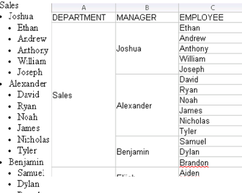
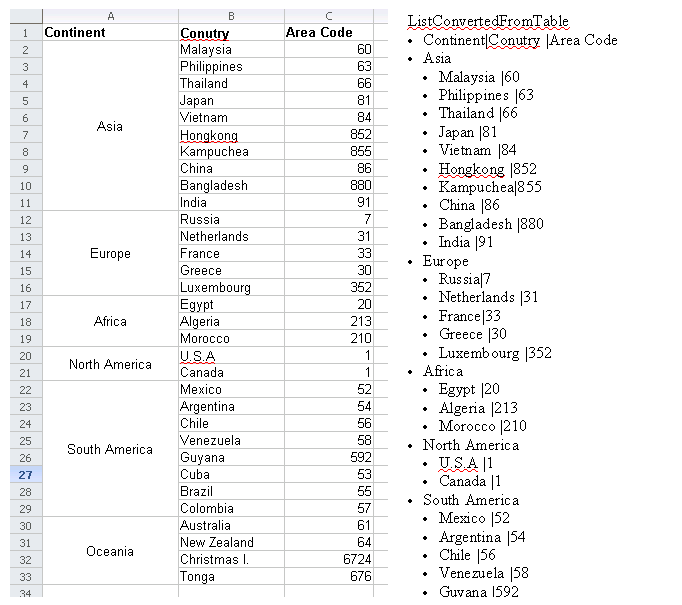

General
Components
Community
Development
TDF
Demos > List and Table Conversion
Overview
Starting in version 0.4, we have added methods to support bullet, numbered and image lists to the Simple API. This includes frequently used features for processing lists and list item. This demo is designed to show the power of List API and help you learn how to use it.
This demo shows how to convert between a nested List and Table. As you can see in the following two pictures, on the left we have a simple outline of a corporate hierarchy. There are four departments in this company. Each department has several managers and each manager has several reporting staff. Now we want to change this list to a table, just like the picture on the right shows.

However, sometimes we want to convert in the opposite direction, from a table to a list. Take the following two pictures as example. The left one is table of country calling codes, which includes the codes of countries from different continents. Suppose you want to convert this table representation into a nested list. The picture on the right shows the conversion result. The first level list show the continent names and the second level list show the countries and their calling codes.

You can see similar functionality in office software, such as selective copy and paste. In the next section, I will show how easy to do these kinds of conversions using the Simple API.
Code Introduction
Let's have a look at the main method. It will help us get an overview of this demo. First, the list data text document, "ListTable.odt" and table data spreadsheet document "TableList.ods" are loaded. Secondly, we use the list iteration function to get all of the lists in the text document and invoke the method convertFromListToTable to convert each of them to a table. Finally, we get the data table from "TableList.ods" and invoke the method convertFromTableToList to convert this table to a list. All of the updated documents are saved as new files. You can open them and see the conversion results.
public static void main(String[] args) {
try {
TextDocument textDoc = TextDocument.loadDocument("ListTable.odt");
SpreadsheetDocument spreadsheetDoc = SpreadsheetDocument.loadDocument("TableList.ods");
// covert list in text document to spreadsheet table
Iterator<list> listIterator = textDoc.getListIterator();
int i = 1;
String[] tableLabel = { "DEPARTMENT", "MANAGER", "EMPLOYEE" };
while (listIterator.hasNext()) {
List list = listIterator.next();
Table newTable = Table.newTable(spreadsheetDoc);
for (int columnIndex = 0; columnIndex < tableLabel.length; columnIndex++) {
newTable.getCellByPosition(columnIndex, 0).setStringValue(tableLabel[columnIndex]);
}
newTable.setTableName("ListTable" + (i++));
convertFromListToTable(list, newTable, 0, 1);
}
spreadsheetDoc.save("TableListUpdate.ods");
// covert table in spreadsheet to list in text document
Table sheet1 = spreadsheetDoc.getTableByName("Sheet1");
textDoc.newParagraph("ListConvertedFromTable");
List newList = textDoc.addList();
convertFromTableToList(sheet1, newList, 0, 0, sheet1.getColumnCount() - 1, sheet1.getRowCount() - 1);
textDoc.save("ListTableUpdate.odt");
} catch (Exception e) {
e.printStackTrace();
}
}
In the following two sections, I will review the implementation of the methods convertFromListToTable and convertFromTableToList.
Convert from List to Table
This is a recursive method, similar to a depth-first tree traversal. You determine the paste cell address by startColumn and startRow. First, all of the items in the list are retrieved. Second, each list item is converted to table cell. Its text content is extracted and set as the cell's display text. If the item has a sub list, its sub list is also handled the same as the parent list. After all of the items are converted to cells, we invoke CellRange.merge() to merge the blank cells. The generation document appears just like the picture shown earlier.
private static int convertFromListToTable(List list, Table table, int startColumn, int startRow) {
java.util.List<listitem> items = list.getItems();
int newItemCount = startRow;
for (ListItem item : items) {
Cell cell = table.getCellByPosition(startColumn, newItemCount);
cell.setStringValue(item.getTextContent());
cell.setVerticalAlignment(VerticalAlignmentType.MIDDLE);
Iterator<list> listIterator = item.listIterator();
startRow = newItemCount;
while (listIterator.hasNext()) {
List subList = listIterator.next();
newItemCount = convertFromListToTable(subList, table, startColumn + 1, newItemCount);
}
// merge
CellRange cellRange = table.getCellRangeByPosition(startColumn, startRow, startColumn, newItemCount);
cellRange.merge();
newItemCount++;
}
if (list.size() > 0) {
return newItemCount - 1;
} else {
return startRow;
}
}
Convert from Table to List
This is also a recursive method. You determine the conversion range of the table by startColumn, startRow, endColumn and endRow. First, every cell in the selected range is retrieved by Table.getCellByPosition. Next, a list item is created to store the cell display text. If the rowSpannedNumber > 1, that means this item has a sub list. Parts of the cells in the right columns of this cell become the items of the sub list. They are also determined by recursive calls to convertFromTableToList. If the rowSpannedNumber = 1, there is no need to create a sub list, all of the content in the right cells is just added to this item.
private static void convertFromTableToList(Table table, List list, int startColumn, int startRow, int endColumn, int endRow) {
while (startRow <= endRow) {
Cell cell = table.getCellByPosition(startColumn, startRow);
int rowSpannedNumber = cell.getRowSpannedNumber();
String cellText = cell.getDisplayText();
if (!"".equals(cellText)) {
ListItem item = list.addItem(cellText);
int columnSpannedNumber = cell.getColumnSpannedNumber();
int newStartColumn = startColumn + columnSpannedNumber;
if (newStartColumn <= endColumn) {
if (rowSpannedNumber > 1) {
List subList = item.addList();
convertFromTableToList(table, subList, newStartColumn, startRow, endColumn, startRow + rowSpannedNumber - 1);
} else {
int tmpStartColumn = newStartColumn;
while (tmpStartColumn <= endColumn) {
cell = table.getCellByPosition(tmpStartColumn, startRow);
cellText = cell.getDisplayText();
if (!"".equals(cellText)) {
item.setTextContent(item.getTextContent() + "|" + cellText);
}
tmpStartColumn += cell.getColumnSpannedNumber();
}
}
}
}
startRow += rowSpannedNumber;
}
}
Download
Powered by Simple API version 0.4. You can download the code of this demo from here.